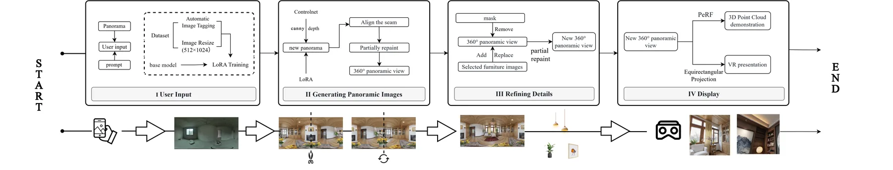
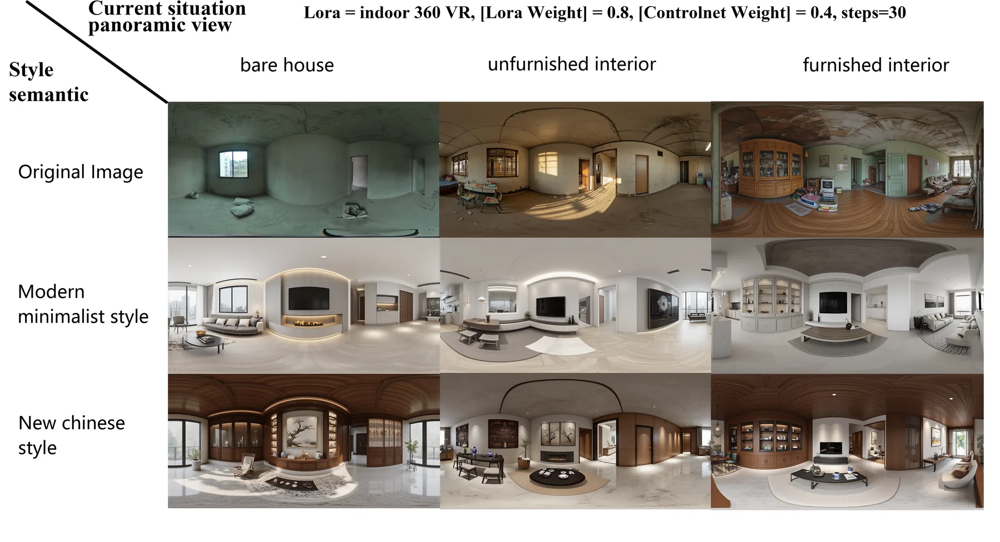
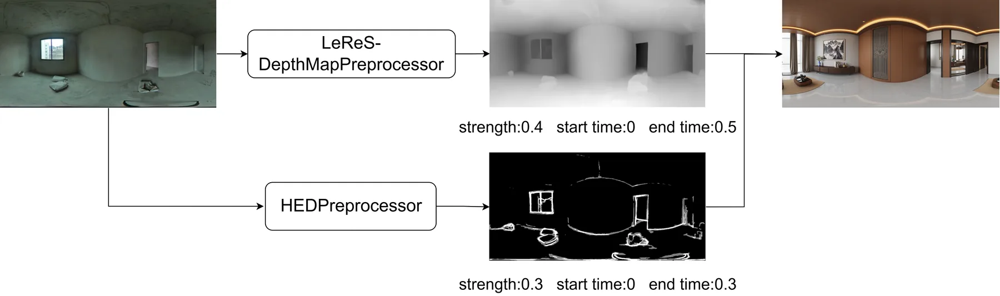

Problem
项目问题
室内改造需要既能局部编辑又能保持全景空间一致性的可视化工具，传统效果图和普通图像生成都难以同时满足交互、连贯和展示需求。
CDRF 论文与成果汇总
Indoor renovation interaction and presentation through diffusion models

全景空间需要局部可编辑，同时保持视角切换中的空间连续性。
结合 ControlNet、Inpainting 与全景修复组织室内更新工作流。
可用于方案沟通的 360 度 AIGC 室内改造展示。
主要参与流程验证、交互场景与成果表达整理。
Problem
室内改造需要既能局部编辑又能保持全景空间一致性的可视化工具，传统效果图和普通图像生成都难以同时满足交互、连贯和展示需求。
Method
Output
把室内改造表达从单张效果图扩展为可局部编辑、可连续浏览、可用于客户沟通的 AIGC 全景工作流。
Gallery


